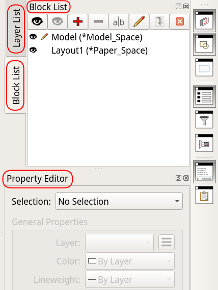
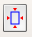
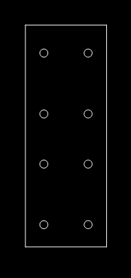
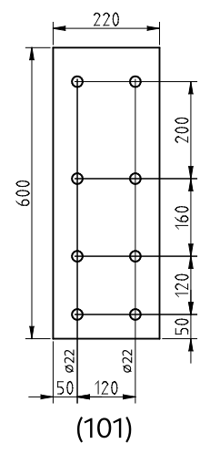
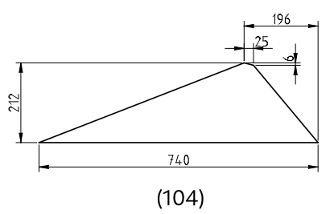
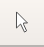

1. Wprowadzenie
Ten przewodnik przedstawia podstawy QCAD’a. Wiele efektów w programie QCAD można osiągnąć na wiele sposobów.
Przewodnik nie jest wyczerpującą encyklopedią programu, a raczej stara się przedstawić jeden, wyważony, łatwy w użyciu sposób produkji rysunków technicznych.
Podane procedury skupiają się na użyciu myszy, ograniczając użycie klawiatury do koniecznego minimum. Powodem jest to, aby uczynić naukę podstaw QCAD’a jak najłatwiejszą, kosztem szybkości rysowania.
1.1. Konwencje
1.1.1. Terminologia
QCAD używa słowa "Drawing" na określenie tego, co niniejszy przewodnik nazywa "projektem", czyli pojedynczy plik/dokument QCAD’a.
Słowo "rysunek" (ang: drawing), przewodnik rezerwuje dla pojedynczego rysunku, czy też pojedynczej "strony", zwykle z własną ramką i tabliczką.
Dla bardziej szczegółowych wyjaśnień, zobacz sekcję Słownik pojęć.
1.1.2. Ścieżki dostępu
Narzędzia dostępne w programie można wybrać na wiele sposobów. Na przykład, to samo narzędzie można wybrać z menu tekstowego lub klikając ikonę na palecie narzędzi. W większości przypadków, dla uproszczenia i jednoznaczności komunikacji niniejszy przewodnik ogranicza się do wybierania narzędzi z menu tekstowego.
Dotarcie do właściwego narzędzia, opcji lub komendy zwykle wymaga kilku kroków, o których sekwencji można myśleć jako o "ścieżce dostępu". Do reprezentacji tych ścieżek ten przewodnik używa konwencji zilustrowanej następującym przykładem:
Edit > Drawing preferences > General > Drawing Unit > Measurement system
Niektóre z członów ścieżki mogą się odnosić do tekstowych menu, a inne do opcji lub pól w oknach dialogowych. Powyższa, przykładowa ścieżka pozwala na znalezienie pola do ustawienia systemu miar. Jest ona zilustrowana na zrzucie ekranu poniżej; zauważ jak segmenty ścieżki korespondują do elementów zaznaczonych na poniższej ilustracji:
Ta konwencja jest używana gdzie jest to tylko możliwe. Tylko w miejscach gdzie jest ona niewystarczająca przewodnik ucieka się do zrzutów ekranu.
Pierwszy człon ścieżki może wskazywać:
-
jedno z "menu" wymienionych na liście na górze okna (np. Edit na ilustracji powyżej),
-
albo jeden z "kluczowych paneli" po prawej stronie ekranu (np. Block List na poniższej ilustracji):
1.1.3. Klikanie
LMB-
Pojedyncze kliknięcie lewego klawisza myszy (Left Mouse Button).
LMBx2-
Dwukrotne kliknięcie lewego klawisza myszy.
RMB-
Pojedyncze kliknięcie prawego klawisza myszy (Right Mouse Button).
1.1.4. Panele
Gdy przewodnik mówi o Block List, Layer List lub Property Editor, to odnosi się on do paneli po prawej stronie ekranu.
Rozdział Włącz kluczowe panele opisuje jak je włączyć i gdzie je znaleźć.
1.1.5. Domyślne ustawienia
W wielu oknach dialogowych przewodnik rekomenduje zmianę pewnych pól, ale ignoruje inne, które mogą być w danym oknie obecne.
W takim przypadku pozostaw the "niewymienione" pola jak są — chyba, że już je znasz i wiesz jakie są ich funkcje i konsekwencje zmiany ich wartości.
1.2. Proces rysowania
Przed przystąpieniem do rysowania po raz pierwszy, upewnij się, że program jest właściwie skonfigurowany, wykonując kroki z rozdziału Skonfiguruj QCAD’a.
Process tworzenia nowego rysunku sprowadza się do następujących faz:
Każda z tych faz opisana jest w indywidualnych rozdziałach poniżej.
2. Skonfiguruj QCAD’a
Instrukcje w tej sekcji zwykle wystarczy wykonać tylko raz, jako że ustawiają one konfigurację całego programu i dla wszystkich nowo tworzonych projektów. Może się zdarzyć, że po re-instalacji lub po instalacji nowszej wersji programu, niektóre z ustawień trzeba będzie przejrzeć i powtórzyć.
2.1. Włącz kluczowe panele
Upewnij się, że powyższe opcje są zaznaczone/aktywne:
-
View > Block List -
View > Layer List -
View > Property Editor -
View > Library Browser
Gdy te opcje są zaznaczone, korespondujące panele powinny być widoczne po prawej stronie ekranu, wyglądając podobnie jak na poniższych ilustracjach.
Zauważ, że to rozmieszczenie można zmieniać, tak aby dostęp do nich był najwygodniejszy:
Figure 2. Wszystkie panele w tej samej sekcji
|

Figure 3. Panele rozdzielone w dwóch sekcjach
|
Możesz zmieniać kolejność pionowych zakładek "łapiąc" i przesuwając je kursorem myszy.
Podobnie, łapiąc i przesuwając poziomo zorientowane tytuły paneli, możesz zmienić lokację tych paneli.
2.2. Wyłącz siatkę
Dlaczego?
Siatka rzadko kiedy jest przydatna, a zwykle wchodzi w drogę.
Siatka jest matrycą punktów rozmieszczonych w modelu w równych, pre-definiowanych odstępach. Punkty te mogą być użyte do zgrubnego rozmieszczania obiektów, służąc jako punkty automatycznie przyciągając kursor. W teorii mają one ułatwić rysowanie, ale w praktyce potrzebujemy punktów wynikających z rozmiarów rysowanych obiektów, takich jak końce lini, środki okręgów lub punkty przecięcia lini. Takie punkty, rzadko kiedy wypadają w miejscach punktów siatki.
Jeśli punkt, który naprawdę nas interesuje (np. punkt przecięcia jakiejś lini z okręgiem) wypada blisko punktu siatki, to jest ryzyko, że wskazując go, np. jako początek lub koniec nowo rysowanej lini, automatyczne przyciąganie może nam przyciągnąć kursor do punktu siatki zamiast punktu naszego zainteresowania. W najlepszym przypadku zauważymy to i skorygujemy (kosztem kilku zbędnych kroków). W najgorszym, całkiem prawdopodobnym przypadku, możemy tej niedokładności nie zauważyć. Niewłaściwa pozycja pozostawiona w rysunku i wielokrotnie traktowana jako punkt odniesiena dla kolejnych punktów odniesiena może propagować nawarstwiający się błąd, który będzie tym kosztowniejszy do naprawy im więcej czasu upłynie do jego wykrycia.
2.2.1. Wyłącz wyświetlanie siatki
Edit > Application Preferences > Defaults for New Drawings > Grid:
-
Odznacz Display grid w panelach po prawej stronie: Viewport 1, Vieport 2, Viewport 3, Viewport 4.
Wyłączenie siatki w tym miejscu spowoduje, że nie będzie ona widoczna w nowo utworzonych rysunkach. Jeśli masz już istniejący rysunek na ekranie, i chcesz wyłączyć siatkę w nim, powtórz powyższy krok w lokacji Edit > Drawing Preferences > General > Grid.
2.2.2. Wyłącz automatyczne przyciąganie do punktów siatki
Odznacz: Edit > Application Preferences > Snap > Auto snap > Grid points
2.3. Ustaw kolor wydruku
Zaznacz: Edit > Application Preferences > Default for New Drawings > Printing — Colors > Black / white
2.4. Wyłącz wyświetlanie "niedrukowalnych" warstw w podglądzie wydruku
Zaznacz: Edit > Application Preferences > File > Print Preview > Show only plottable layers
2.5. Włącz podgląd wydruku automatycznie przy wchodzeniu w przestrzeń papieru
Zaznacz: Edit > Application Preferences > File > Print Preview > Automatically switch print preview on for layout blocks
2.6. Włącz wyświetlanie pomiarów w linii komend
Odznacz: Edit > Application Preferences > Widgets > Command Line > Show information as dialog
Odznacz: Edit > Application Preferences > Widgets > Command Line > Show warnings as dialog
2.7. Włącz linię komend
Zaznacz: View > Command Line — o ile nie jest już zaznaczone.
2.8. Włącz wyświetlanie statusu "plottable" in Layer List
Zaznacz: _Edit > Application Preferences > Widgets > Layer List > Show plottable column
2.9. Włącz wyświetlanie biblioteki jako listę
W menu Edit > Application Preferences > Widgets > Library Browser > View mode wybierz _List.
2.10. Ściągnij pliki ramek
Na dysku Twojego komputera (np. w katalogu Dokumenty albo tam gdzie trzymasz swoje projekty) stwórz strukturę katalogów:
qcad
└── biblioteka
└── ramkiŚciągnij następujące pliki, jeden po drugim, do tego nowo utworzonego katalogu ramki:
Dodaj je teraz do biblioteki QCAD’a:
-
Otwórz:
Edit > Application Preferences > Widgets > Library Browser > Library Sources -
W panelu Library Sources kliknij Add
-
W oknie dialogowym, które się pojawi, znajdź i wejdź do katalogu ramki utworzonego powyżej.
-
Kliknij Choose aby zatwierdzić wybór.
-
Kliknij OK aby zatwierdzić zmiany ustawień.
-
Zamknij i otwórz QCAD’a.
2.11. Ściągnij pliki szablonów rysunków
Na dysku Twojgo komputera, w katalogu qcad > biblioteka (stworzonym w powyższym kroku), utwórz katalog szablony:
qcad
└── biblioteka
├── ramki
└── szablonyŚciągnij następujące pliki, jeden po drugim, do tego nowo utworzonego katalogu szablony:
Zarejestruj pliki szablonów w QCAD’zie:
-
Otwórz:
Edit > Application Preferences > File > Templates -
W panelu File: Templates kliknij Add
-
W oknie dialogowym, które się pojawi, znajdź i wejdź do katalogu szablony utworzonego powyżej.
-
Kliknij Choose aby zatwierdzić wybór.
-
Kliknij OK aby zatwierdzić zmiany ustawień.
-
Zamknij i otwórz QCAD’a.
3. Stwórz nowy rysunek
3.1. Zamknij domyślny, pusty rysunek
W czasie uruchamiania, QCAD automatycznie tworzy pusty rysunek. Jeśli tak właśnie się stało i masz go na ekranie, zamknij ten rysunek (bez zamykania samego programu):
-
File > Close -
wybierz Close without Saving (o ile program zapyta).
3.2. Stwórz nowy rysunek z szablonu
-
File > New from Template… -
Wybierz szablon, klikając jeden z poniższych szablonów:
-
rysunek qcad - wymiary w milimetrach — dla rysunków stali
-
rysunek qcad - wymiary w centymetrach — dla rysunków obiektów murowanych i drewnianych
-
-
Kliknij
Create New Drawingaby stworzyć rysunek.
3.3. Warstwy
Ściągnięte pliki zawierają kilka użytecznych, już skonfigurowanych warstw. Użyj ich dla uproszczenia rysowania:
-
konstrukcja— tu rysuj swój model — elementy stalowe, więźby, mury, etc. -
widoki— tu umieszczaj widoki elementów dla wydruku (jak opisane w Dodaj widok elementu) -
wymiary opisy (model)— na tej warstwie umieszczaj pomocnicze opisy i wymiary, które powinny być widoczne tylko w modelu, a które nie powinny być drukowane na papierze. Innymi słowy, są to elementy, które służą Tobie, jako rysownikowi, ale które nie powinny być uwidocznione czytelnikowi rysunku. -
wymiary opisy (papier)— przeznaczona dla opisów i wymiarów, które powinny być drukowane na papierze.
4. Narysuj model
Używając narzędzi rysowania, narysuj obiekty, które są tematem twojego rysunku. Pamiętaj, że w modelu nie przejmujemy się skalą, bo w nim wszystko rysujemy w skali 1:1.
Trudno jest podać procedurę rysowania krok po kroku, jako że każdy rysunek jest inny. Z tego powodu, rozdział ten podaje jedynie kluczowe wskazówki, które powinny uczynić rysowanie łatwiejszym.
|
Note
|
W zależności który z "bazowych" plików ściągnąłeś w poprzednim kroku, model będziesz rysować w jednostkach takich jak odzwierciedlone w nazwie pliku (milimetry dla stali, centymetry dla obiektów drewnianych i stalowych). |
4.1. Przejdź do "przestrzeni modelu"
Przez większość czasu pracujesz rysując model w "przestrzeni modelu" (widok z czarnym tłem), ale gdy potrzebujesz do niego wrócić (np. z podglądu wydruku):
LMBx2: Block List > Model (*Model space):
4.2. Ograniczaj ręczne kalkulacje do absolutnego minimum
Pozwól QCAD’owi robić jak najwięcej pracy za Ciebie, zawsze szukając sposobów, aby:
-
wykonywać jak najmniej ręcznych kalkulacji,
-
wpisywać jak najmniej parametrów z klawiatury.
Oszczędzi Ci to dużo czasu i wysiłku. Te "sposoby" sprowadzają się do takiego rysowania, aby móc maksymalnie polegać na przyciąganiu do punktów takich jak końce linii, czy punkty przecięcia, zamiast wprowadzania współrzędnych ręcznie.
4.3. Rozmieść detale
Model to nie prezentacja. Precyzyjne rozmieszczanie elementów tak, aby wyglądały dobrze na wydruku, będziemy robić później. To powiedziawszy, rysując model, dobrze jest utrzymywać niejaki porządek i zastosować minimum planowania, aby się w rozbudowanym modelu połapać.
4.4. Pomocnicze wymiary, opisy i numeracja w modelu
Wymiary i opisy przeznaczone dla czytelnika rysunków będziemy umieszczać na papierze.
To powiedziawszy, nieco komentarza, numeracja elementów lub kilka kluczowych wymiarów umieszczona w modelu może być użyteczna dla nas, jako rysowników, pomagając nam lepiej się w nich orientować, zwłaszcza jeśli model jest skomplikowany.
Jeśli chcesz takie pomocnicze elementy umieścić w modelu, pamiętaj, aby:
-
umieszczać je na niedrukowalnej warstwie wymiary opisy (model),
-
nadawać im duży rozmiar czcionek (w modelu używamy skali 1:1, na papierze zwykle jest to skala znacznie większa, więc czcionki w rozmiarze dobrze wyglądającym na papierze są nieczytelnie małe w modelu).
5. Przedstaw model na wydruku
Innymi słowy: przygotuj prezentację. Dopiero tutaj będziemy myśleć o skali, wymiarach i opisach.
5.1. Stwórz nową stronę
Block > Add Layout Block:
-
Nazwij nową stronę w polu Layout name, np. "02 - rygiel 1", albo "03 - słup 2".
-
Zignoruj pole Order.
5.2. Wejdź w "przestrzeń papieru" bieżącej strony
Upewnij się, że bieżąca strona jest aktywna w panelu Block List (ma wyświetloną ikonę ołówka). Jeśli nie jest, kliknij jej nazwę dwa razy:
To automatycznie włącza podgląd wydruku. W tej chwili strona może jeszcze nie być widoczna na ekranie — naprawimy to w kroku Wycentruj podgląd strony na ekranie.
5.3. Wyłącz kolory
…o ile nie są już wyłączone:
5.4. Ustaw rozmiar i orientację strony
Otwórz: Edit > Drawing preferences > Printing > Page. Tamże:
-
Ustaw orientację strony w Page Orientation.
-
Ustaw rozmiar papieru w
Paper > Paper size.
5.5. Wycentruj podgląd strony na ekranie
Kliknij ikonę Auto zoom to page(s) na pasku narzędzi:
|
Warning
|
Nie pomyl ikony, i nie kliknij omyłkowo Auto center (). To narzędzie automatycznie przesuwa elementy już rozmieszczone na stronie, do jej centrum, czego odwrócenie nie zawsze jest łatwe. My chcemy tylko łatwo wycentrować podgląd strony na ekranie, a nie zmieniać jej zawartość. |
5.6. Dodaj ramkę
Dodając ramkę po raz pierwszy, dodasz ją z biblioteki.
W panelu Libray browser po prawej stronie ekranu (wspomniany w sekcji Włącz kluczowe panele) wybierz ramkę:
-
wybierz zakładkę File system,
-
w rozwijalnym menu pod zakładką wybierz ramki,
-
w panelu poniżej zaznacz ramki,
-
powiększ lewy, dolny róg białej strony na ekranie (jak na poniższej ilustracji),
-
w panelu poniżej,
LMBx2ramkę o rozmiarze i orientacji odpowiadających rozmiarowi i orientacji strony (nadanych w kroku Ustaw rozmiar i orientację strony),-
to "przyklei" ramkę do kursora myszy w głównym obszarze rysunku,
-
-
wybierz
Snap > Grid, -
zakotwicz ramkę na stronie, klikając w miejscu przecięcia się szarych, wąskich krawędzi białego obszaru (punkt przedstawiony czerwonym celownikiem na poniższej ilustracji):
Gdy już raz wkleiłeś daną ramkę z biblioteki, ramka ta dostępna jest jako blok. Dla kolejnych rysunków możesz ramkę dalej dodawać z biblioteki, albo z panelu Block List, jak Ci wygodniej.
Jeśli wolisz Block List:
-
zaznacz ją tam przez
RMB, -
wybierz Insert Block z podręcznego menu,
-
zakotwicz ramkę na rysunku jak opisano w krokach powyżej.
|
Note
|
Ramka wklejona z biblioteki automatycznie dodaje nową warstwę o nazwie "ramka tabliczka". Warstwy tej nie usuwaj, bo stracisz ramki i tabliczki z tego i pozostałych stron w bieżącym pliku rysunku. |
|
Note
|
Ramka ta dodaje również blok o nazwie takiej, jaką wybrałeś z biblioteki (np. ramka A2 poziom). Bloku tego nie usuwaj, bo stracisz ramki z tego i pozostałych stron w bieżącym pliku rysunku. |
5.7. Dodaj tabliczkę do rysunku — po raz pierwszy
Jeśli umieszczasz tabliczkę w bieżącym projekcie po raz pierwszy, będziesz umieszczał ją z biblioteki (Library Browser).
Upewnij się, że:
-
jesteś w przestrzeni papieru, tzn. w podglądzie wydruku strony, gdzie chcesz umieścić tabliczkę (Wejdź w "przestrzeń papieru" bieżącej strony),
-
bieżąca strona ma już ramkę (umieszczoną jak opisano w Dodaj ramkę, powyżej).
Następnie:
-
RMBLibray Browser > File System > ramki > tabliczka 120x40 -
LMBInsert.
|
Note
|
Czynność tę potrzebujesz wykonać tylko raz. Po wykonaniu tego kroku tabliczka jest "zarejestrowana" jako blok w bieżącym projekcie i widoczna w panelu Block List. Aby umieścić ją na kolejnych rysunkach, będziesz ją kopiować z tej listy. |
5.7.1. Wypełnij blok tabliczki — wspólne teksty
-
RMBblok tabliczki w panelu Block List, -
wybierz Edit block.
Jesteś teraz w "trybie edycji bloku", tzn. że edytujesz blok tabliczki w izolacji od reszty rysunku.
-
Wypełnij pola które zawierają teksty wspólne dla wszystkich stron w danym rysunku, takie jak Inwestor, Obiekt czy Temat.
-
Aby zaktualizować pole, już zawierające tekst,
LMBx2ten text. -
Aby zaktualizować pole zawierające tylko podkreślenia,
LMBx2te podkreślenia.
-
-
Zignoruj (na razie) pola, które będą zawierały teksty różniące się między stronami, takie jak Rysunek czy Nr rysunku.
-
Po zaktualizowaniu wszystkich "wspólnych" pól, zakończ edycję bloku tabliczki, wybierając
Block > Return to Main Drawing.
|
Note
|
Krok ten potrzebujesz wykonać tylko raz. Odtąd, kopie tabliczki umieszczane na indywidualnych stronach będą dziedziczyć wspólne teksty, które w tym kroku przygotowałeś. |
|
Note
|
Edycja bloku tabliczki w Block List nie zmienia domyślnej tabliczki zachowanej w bibliotece (Library Browser). |
|
Note
|
Jeśli nowy tekst wykracza poza objętość pola, zmniejsz go w oknie dialogowym w polu Height w lewym górnym rogu. |
|
Note
|
Jeśli domyślny tekst (lub ciąg podkreśleń) zawierają tylko jeden wiersz, a potrzebujesz dodać następny, odznacz opcję Simple text w oknie dialogowym tekstu (o ile jest zaznaczona) i dodaj nową linię. |
5.7.2. Rozbij tabliczkę
-
RMBtabliczkę na rysunku, aby ją zaznaczyć. -
Block > Explode
|
Note
|
Wykonaj ten krok za każdym razem po kroku Wypełnij blok tabliczki — wspólne teksty oraz po umieszczeniu jej na kolejnych rysunkach (krok Umieść tabliczkę na rysunku — po raz kolejny). |
Dlaczego?
Tabliczka wklejona w kroku Dodaj tabliczkę do rysunku — po raz pierwszy jest na razie blokiem. Oznacza to, że gdybyśmy w tej postaci zmienili jej treść, ta zmiana byłaby widoczna na wszystkich rysunkach gdzie tabliczka umieszczona jest jako blok.
W przypadku pól zawierających teksty unikatowe dla danej strony rysunku — takich jak numer rysunku, czy jego tytuł — jest to niepożądane.
Dlatego, aby nasze zmiany w tabliczce ograniczyły się tylko do bieżącego rysunku, musimy ją "rozbić" na indywidualne elementy, tak aby przestała być blokiem.
5.8. Umieść tabliczkę na rysunku — po raz kolejny
Zanim umieścisz tabliczkę na rysunku, najpierw upewnij się, że umieściłeś na bieżącej stronie właściwą ramkę, jak opisano w kroku Dodaj ramkę.
-
W panelu Block List,
RMBblok tabliczki. -
To pokaże zarys tabliczki w głównym obszarze rysunku, "przyklejony" do kursora myszy.
-
Zakotwicz tabliczkę na papierze, klikając prawy dolny róg ramki.
-
Rozbij wklejoną tabliczkę jak opisano w sekcji Rozbij tabliczkę.
|
Warning
|
Wklejając tabliczkę po raz pierwszy, wklejałeś ją z biblioteki (Library Browser). Pamiętaj, aby przy wszystkich kolejnych stronach wklejać ją z Block List. To dlatego, że wkleiwszy ją po raz pierwszy, zaktualizowałeś definicję bloku tabliczki tekstami unikatowymi dla bieżącego projektu (w kroku Wypełnij blok tabliczki — wspólne teksty). Tabliczka w bibliotece nie będzie zawierała tych uaktualnień, ale tabliczka w Block List — tak, więc wklejając ją z listy bloków, skorzystasz z raz ustawionych tam tekstów. |
5.8.1. Wypełnij tabliczkę tekstami unikatowymi dla bieżącego rysunku
Tabliczka na każdej stronie zawiera teksty takie jak tytuł rysunku czy jego numer, które nie powtarzają się na innych stronach. Świeżo wklejona, domyślna tabliczka zawiera tylko podkreślenia w miejscu takich tekstów.
Aby wypełnić tabliczką właściwą treścią, LMBx2 teksty w indywidualnych polach aby je zmienić. Niektóre z pól zawierają tylko podkreślenia; w tym przypadku LMBx2 te podkreślenia i zastąp je właściwym tekstem.
|
Note
|
Jeśli nowy tekst wykracza poza objętość pola, zmniejsz go w oknie dialogowym w polu Height w lewym górnym rogu. |
|
Note
|
Jeśli domyślny tekst (lub ciąg podkreśleń) zawierają tylko jeden wiersz, a potrzebujesz dodać następny, odznacz opcję Simple text w oknie dialogowym tekstu (o ile jest zaznaczona) i dodaj nową linię. |
5.9. Dodaj widok elementu
Niektóre elementy są w modelu zorientowane w pionie lub poziomie. Takie elementy zwykle będziemy przedstawiać na papierze w tej samej orientacji, w jakiej znajdują się w modelu. Przykładami są słupy, poziome belki lub blachy czołowe:

Figure 7. Blacha czołowa w modelu
|

Figure 8. Blacha czołowa na papierze
|
Inne elementy są w modelu zorientowane "po skosie", jednak na papierze chcielibyśmy je obrócić dla lepszego wykorzystania miejsca na papierze, czytelności, i większej łatwości wymiarowania. Przykładami takich elementów są ukośne rygle, krokwie i narożne blachy wzmacniające węzeł słup-rygiel:

Figure 9. Blacha narożna w modelu — po skosie
|

Figure 10. Blacha narożna na papierze — w poziomie
|
Zacznijmy od elementów zorientowanych w pionie. W późniejszej sekcji Widok elementów zorientowanych po skosie, zobaczymy jak radzić sobie z elementami, które są zorientowane "po skosie" i wymagają obrotu na papierze.
5.9.1. Widok elementów zorientowanych w pionie/poziomie
5.9.1.1. Wejdź na warstwę "widoki"
Upewnij się, że warstwa "widoki" jest aktywna w Layer list. Jeśli nie jest, to LMB jej nazwę w panelu Layer list.
5.9.1.2. Wejdź w przestrzeń papieru
Upewnij się, że jesteś w "przestrzeni papieru" (paper space) bieżącej strony (Wejdź w "przestrzeń papieru" bieżącej strony).
5.9.1.3. Zacznij dodawać widok
Dodaj widok elementu, wybierając Draw > Viewport > Add viewport.
|
Note
|
To chwilowo wyłącza podgląd wydruku (ten z białym tłem) i przenosi Cię do podglądu modelu (tego z czarnym tłem). |
5.9.1.4. Nadaj widokowi skalę
Wprowadź skalę w jakiej chcesz przedstawić element na stronie w polu Scale. Możesz stosować notacj 1:20, 1/20 lub 0.05.
5.9.1.5. Zaznacz obrys widoku
Program czeka teraz, aż zaznaczysz prostokątny obszar obrysowujący element, który chcesz przedstawić na stronie.
|
Note
|
Pamiętaj, że możesz przesuwać, pomniejszać i powiększać podgląd modelu, żeby wygodniej i bardziej precyzyjnie zaznaczyć potrzebny obszar. |
Zacznij obrysowywać element konturem widoku, nieco większym niż sam element, klikając w czarne tło:
-
LMBw jednym rogu obrysu, -
LMBw rogu po przekątnej.
Drugi klik zabiera Cię z powrotem do podglądu wydruku (tego z białym tłem).
5.9.1.6. Umieść widok na stronie
Program oczekuje teraz wskazania pozycji na papierze, gdzie chcesz umieścić widok elementu. Poruszaj kursorem myszy i zauważ, że widok elementu jest do niego "przyklejony" i rusza się razem z kursorem.
-
Przesuń kursor myszy na miejsce gdzie widok ma być umieszczony.
-
LMB, żeby "zakotwiczyć" (wkleić) widok na stronie.
5.9.1.7. Skoryguj pozycję widoku
Jeśli potrzebujesz przesunąć widok w inne miejsce na stronie:
-
Wybierz strzałkę Pana Słodowego ().
-
Zaznacz widok, razem z towarzyszącymi mu wymiarami i opisami.
-
Przesuń zaznaczone obiekty, wciskając klawisze strzałek na klawiaturze. Możesz te klawisze wcisnąć i trzymać wciśnięte (jeden na raz), puszczając je dopiero gdy widok znajdzie się na właściwym miejscu.
|
Note
|
Możesz również przesunąć zaznaczony widok "łapiąc" go myszą, klikając i "przytrzymując" którąś z linii, grot strzałki wymiarowej, albo którąś z liter. Możesz potrzebować powiększyć podgląd strony aby ułatwić sobie wcelowanie we właściwy element. W praktyce, nie zawsze się to "złapanie" myszą udaje. W takim przypadku metoda przesuwania podglądu przy użyciu strzałek na klawiaturze wydaje się najbardziej niezawodna (mimo, że może być nieco wolniejsza niż użycie myszy). |
5.9.1.8. Skoryguj skalę widoku
Jeśli potrzebujesz skorygować skalę widoku, najłatwiej jest to zrobić usuwając go i tworząc go od nowa z właściwą skalą (jak opisano w sekcji Dodaj widok elementu).
Usunięcie widoku:
-
Upewnij się, że jesteś w przestrzeni papieru.
-
Zaznacz widok pojedynczym kliknięciem
LMB. -
Wciśnij klawisz Delete na klawiaturze.
5.9.2. Widok elementów zorientowanych po skosie
Jak wspomniano wcześniej (w sekcji Dodaj widok elementu), widoki elementów zorientowanych w modelu "po skosie" wymagają obrócenia. Zwykle chcemy je obrócić tak, aby najdłuższa krawędź elementu znalazła się w poziomie lub pionie, dla lepszego wykorzystania miejsca na papierze, czytelności, i większej łatwości wymiarowania.
|
Note
|
Zwróć uwagę, że obracamy tu widok elementu na papierze. Orientacja elementu w modelu pozostaje bez zmian. |
Procedura dodawania widoków elementów zorientowanych po skosie jest podobna do tej dla widoków, które nie wymagają obracania, różniąc się od niej małymi tylko zmianami.
Dlatego, zanim przystąpisz do umieszczania widoków elementów zorientowanych "skośnie", upewnij się, że masz dobrze opanowaną procedurę umieszczania widoków elementów zorientowanych w pionie/poziomie, jak opisano w Dodaj widok elementu.
5.9.2.1. Znajdź kąt obrotu widoku
Zanim wklejanemu widokowi będziemy mogli zadać kąt obrotu, musimy ten kąt najpierw znaleźć. Kąt ten to kąt ostry między krawędzią, którą chcemy umieścić w poziomie, a poziomem, w modelu.
Żeby zmierzyć ten kąt:
-
Wejdź w przestrzeń modelu:
LMBx2Block List > Model (Model_Space). -
Narysuj poziomą, pomocniczą, tymczasową linię, przecinającą się z najdłuższą krawędzią elementu (
Misc > Draw > Horizontal Construction Line):
-
Wybierz narzędzie
Info > Angle. -
Kliknij nowo narysowaną linię pomocniczą w pobliżu punktu przecięcia (1).
-
Zbliż kursor myszy do krawędzi elementu od "wnętrza" kąta ostrego (2), tak aby pokazał się łuk kąta wewnątrz kąta ostrego (3), i kliknij, aby ten łuk utrwalić:
-
Miara kąta zostanie wyświetlona na ekranie, ale również w lini komend w lewym, dolnym rogu ekranu. Ta w lini komend ma zwykle znacznie większą precyzję, niż ta na ekranie.
-
Zaznacz całą wartość numeryczną wyświetloną w lini komend (bez symbolu stopni) i skopiuj ją do schowka (Ctrl+C albo
RMB > Copy):
-
Usuń pomocniczą, poziomą linię.
5.9.2.2. Zacznij dodawać widok
Zacznij dodawać widok jak opisano dla elementów poziomych w sekcji Zacznij dodawać widok.
Gdy przejdziesz krok Nadaj widokowi skalę, wróć tutaj i kontynuuj od następnej sekcji.
5.9.2.3. Nadaj widokowi kąt obrotu
W kroku Nadaj widokowi skalę, obok pola Scale, mogłeś zauważyć pole Rotation.
To pole wyznacza kąt obrotu widoku. Kąt ten znaleźliśmy w kroku Znajdź kąt obrotu widoku i skopiowaliśmy do schowka.
Wklej tę skopiowaną wartość kąta w polu Rotation:
5.9.2.4. Zaznacz obrys widoku
Podobnie jak poprzednio, następny krok to obrysowanie widoku, i znowu podobnie jak poprzednio, obrysujemy obszar nieco większy niż sam element.
Tak jak opisano w Zaznacz obrys widoku dla elementów zorientowanych w poziomie, tutaj również musimy wyznaczyć dwa, przeciwległe rogi prostokąta obrysu.
Tym razem, jednak, prostokąt obrysu wyświetlany w modelu będzie zorientowany po skosie, bo zmieniliśmy wartość kąta w polu Rotation. Weź to pod uwagę, wyznaczając narożniki (1) i (2):
Krawędź obrysu musi być równoległa do tej krawędzi elementu, dla której zmierzyliśmy kąt obrotu. Jeśli nie jest ona równoległa, podaj wartość kąta obrotu w polu Rotation jako ujemną (poprzedź ją znakiem minus).
5.10. Zwymiaruj elementy
5.10.1. Wejdź na warstwę "wymiary opisy (papier)"
Upewnij się, że warstwa "wymiary opisy (papier)" jest aktywna w Layer list:
LMB: Layer list > wymiary opisy (papier).
5.10.2. Nadaj wymiar elementowi
-
Wybierz narzędzie do wymiarowania.
-
Upewnij się, że na pasku ustawień narzędzia skala (Scale) jest ustawiona na Auto:

-
Nadaj elementowi wymiar:
-
LMBpierwszy punkt wymiaru, -
LMBdrugi punkt wymiaru, -
LMBna papierze w jakimś dystansie od elementu, żeby "zakotwiczyć" linię wymiarową.
-
6. Słownik pojęć
Objaśnienia kluczowych terminów użytych w niniejszym przewodniku:
- Warstwa drukowalna/niedrukowalna
-
(ang: plottable layers) Warstwy domyślnie są drukowalne, tzn. należące do nich obiekty są widoczne w podglądzie wydruku (o ile warstwa jest włączona) i drukowane na papierze. Warstwę można uczynić "niedrukowalną" przez wyłączeniu jej parametru Plottable. Obiekty do takiej warstwy nie będą widoczne na podglądzie wydruku (nawet jeśli warstwa jest włączona) ani nie będą drukowane na papierze. Aliści, o ile niedrukowalna warstwa jest włączona jej obiekty będą widoczne w modelu.
- Blok (zwykły)
-
(ang: block) Zespół elementów zebranych razem pod wspólną nazwą (linie, teksty, wymiary, a nawet inne bloki). Bloki tworzy się wtedy gdy ten sam zespół elementów trzeba przedstawić na rysunku więcej niż raz. "Definicja" bloku jest zawarta w panelu "Block List" skąd może być wklejana w pożądane miejsca rysunku (zarówno w przestrzeni modelu jak i paperu). Zmiany w definicji bloku są odzwierciedlane we wszystkich jego kopiach. Aby przerwać to połączenie, kopia może zostać "rozbita" na elementy składowe (
Block > Explode).
- Layout Block
-
Definicja pojedynczego rysunku. QCAD umieszcza taką definicję jako jeden z elementów "Paper Space" w panelu Block List obok zwykłych bloków. Jest to dyskusyjny wybór, jako że przy większej liczbie rysunków i bloków ta lista staje się mniej czytelna.
- Projekt
-
Pojedynczy plik QCAD’a. Taki plik zawiera jeden model (representowany przez blok "Model Space" w panelu Block List) i jeden lub więcej rysunków (reprezentowanych przez elementy "Paper Space" w panelu Block List obok zwykłych bloków).
- Rysunek
-
Pojedyncza strona w projekcie QCAD’a, reprezentowana przez pojedynczy Layout Block w panelu Block List. Zwykle z ramką i tabliczką. W projekcie często jest więcej niż jeden rysunek. Niniejszy przewodnik zakłada, że jeden rysunek jest drukowany na jednym arkuszu papieru, ale QCAD ma funkcję drukowania jednego, większego rysunku na zestawie mniejszych kartek/arkuszy papieru.